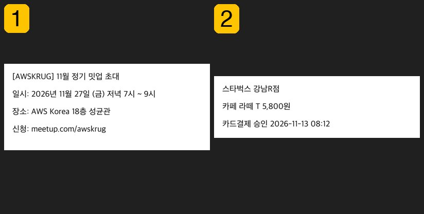

일하는 앨범 MCP · the album MCP that works for you
"지난달 캡쳐한 카페 영수증"을 찾으려면 수백 장을 스크롤해야 합니다. 앨범 검색은 날짜와 "스크린샷" 정도만 압니다.
밋업 공지, 예약 확인을 캡쳐해 놓고 등록은 잊습니다. 그리고 일정을 놓칩니다.
앨범 정리는 아무도 하지 않습니다. 캡쳐는 쌓이기만 합니다.
launchd가 스크린샷 폴더를 지켜보다 새 캡쳐가 생기면 Kiro CLI(헤드리스)가 위 과정을 끝냅니다. 사용자는 아무것도 열지 않습니다.
look_at: AI에게 보여 주는 번호 그리드

$ album-mcp process synced 2 new, unfiled 2 [tool] @rollcall/inbox [tool] @rollcall/file_capture ×2 [tool] @rollcall/add_event filed 2, events 1
| kind | Kiro가 쓴 요약 |
|---|---|
| event | AWSKRUG 11월 정기 밋업. 11/27(금) 19:00–21:00, AWS Korea 18층 성균관 |
| reference | 스타벅스 강남R점 카페 라떼 5,800원 카드결제 영수증 |
→ 밋업은 캘린더 일정으로 생성 (장소, 원본 캡쳐 id 포함)
| Rollcall | 기존 방식 | |
|---|---|---|
| 프라이버시 | 사진·OCR·인덱스 모두 Mac 안 SQLite. 외부 비전 API, 클라우드 벡터 DB 없음 | 클라우드 업로드 후 분석 |
| 이해 방식 | 대화 중인 AI가 OCR과 썸네일을 직접 보고 판단 | 임베딩 점수만으로 검색 |
| 범용성 | MCP 서버: Kiro, Claude 등 어디에나. 안드로이드, Google/Outlook 캘린더 지원 | 특정 앱·기기 전용 |
| 노력 | 캡쳐만 하면 자동 (launchd + Kiro CLI) | 앱을 열고 직접 정리 |
| 안전 | Photos는 읽기 전용, 헤드리스는 rollcall 도구만 신뢰 | – |
EARS 형식 요구사항 19개. 안드로이드·다중 캘린더 요구도 spec에 먼저 추가하고 구현
분류 기준표, 3개 워크플로, "상대 날짜는 캡쳐 시각 기준" 같은 판단 규칙. 헤드리스 실행도 같은 규칙을 따름
세션 시작 시 새 캡쳐를 OCR 인덱싱하고 미분류 개수를 에이전트에 알림
직접 만든 rollcall 서버(도구 9개)를 워크스페이스 mcp.json에 등록
--no-interactive + 도구별 신뢰 목록으로 사람 없이 분류와 등록
pytest 8개, MCP 클라이언트 병렬 호출 테스트, 실제 Kiro 헤드리스 end-to-end
나머지는 Rollcall이 합니다.
uv run album-mcp install-agent · github.com/makim-414/team-023